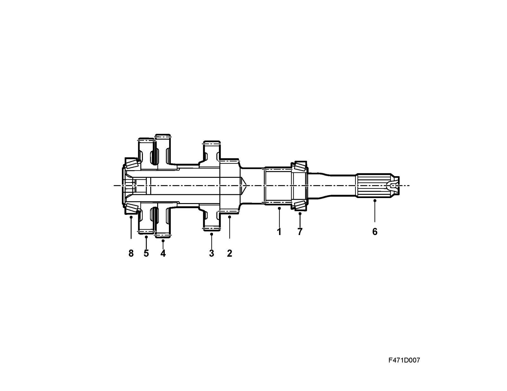
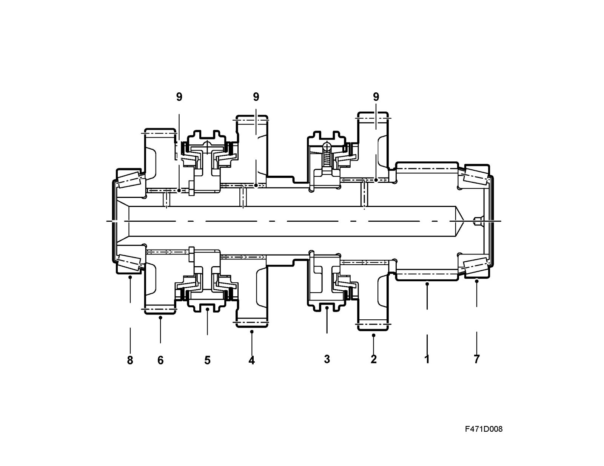
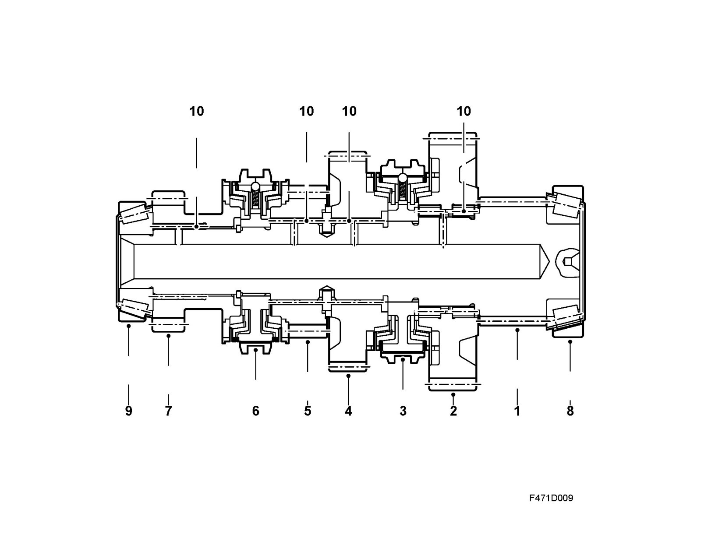

Basic Design
Basic designInput shaft

1. Pinion, 1st gear
2. Pinion, 2nd gear
3. Pinion, 3rd/5th gear
4. Pinion, 4th gear
5. Pinion, 6th gear
6. Splines for clutch
7. Bearing, clutch housing
8. Bearing, gearcase
Upper output shaft

1. Pinion
2. Gear wheel, reverse gear
3. Synchromesh hub for reverse gear, 2-cone type
4. Gear wheel, 3rd gear
5. Synchromesh hub for third and fourth gears, 2-cone type
6. Gear wheel, 4th gear
7. Bearing, clutch housing
8. Bearing, gearcase
9. Roller bearing for gear wheels, 3 pcs
Lower output shaft

1. Pinion
2. Gear wheel, 1st gear
3. Synchromesh hub for 1st and 2nd gears, 3-cone type
4. Gear wheel, 2nd gear
5. Gear wheel, 5th gear
6. Synchromesh hub for fifth and sixth gears, 1-cone type
7. Gear wheel for sixth gear
8. Bearing, clutch housing
9. Bearing, gearcase
10. Roller bearing for gear wheels, 4 pcs